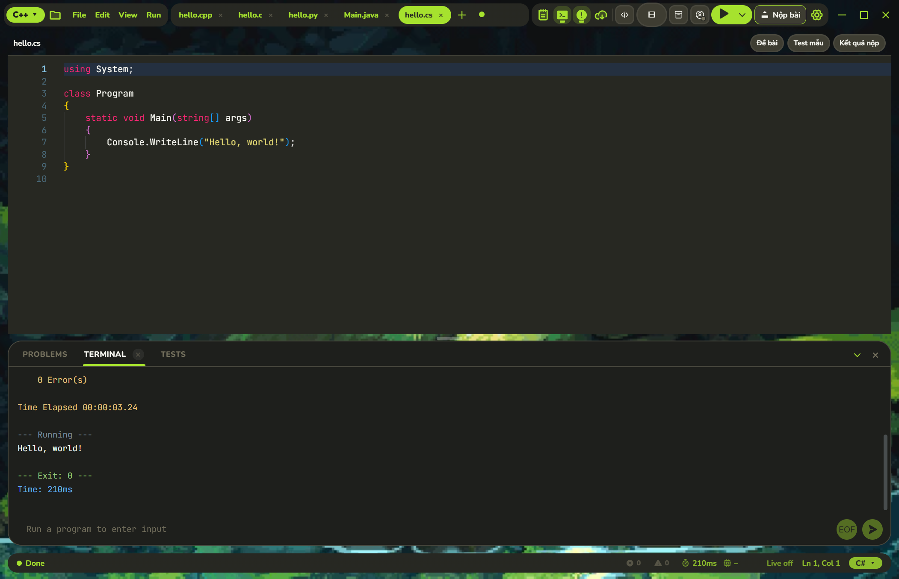
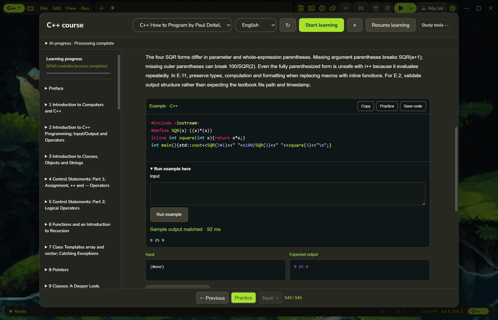

Viết, chạy, xem kết quả.
Mở tệp hoặc cả thư mục. Chọn ngôn ngữ, nhập dữ liệu và chạy chương trình ngay trong IDE với công cụ đi kèm.
print("Hello, world!")
↳ Hello, world!
↳ Hello, world!
● MỘT KHÔNG GIAN CHO VIỆC HỌC CODE
Từ chương trình đầu tiên đến bài luyện tiếp theo. Semeko đặt trình soạn thảo, công cụ chạy và tài liệu học vào cùng một nơi.
Tải Semeko cho Windows ↗Xem ghi chú phát hành ↗
ÍT THIẾT LẬP. THÊM THỜI GIAN THỰC HÀNH.
Mở tệp hoặc cả thư mục. Chọn ngôn ngữ, nhập dữ liệu và chạy chương trình ngay trong IDE với công cụ đi kèm.
Chọn bài từ Codeforces, LeetCode, HackerRank hoặc kho luyện tập. Đọc đề cạnh code và theo dõi kết quả test mẫu.
Tự lưu, phục hồi phiên làm việc, ghi chú và sao lưu tiến độ để quay lại bài đang làm.
Test mẫu trên máy khác với kết quả chấm chính thức. Tính năng trực tuyến cần Internet và phiên đăng nhập nền tảng phù hợp.

ĐỌC HIỂU. THỬ NGAY.
Học theo chương, chuyển Anh/Việt và mở ví dụ trong trình soạn thảo. Thử ngay điều vừa đọc mà không cần rời ứng dụng.
Một số đề luyện tập liên kết vẫn giữ tiếng Anh. Nội dung và bản dịch tiếp tục được rà soát.
BẮT ĐẦU TRONG BA BƯỚC
Chọn bản Windows x64. Bộ cài đã chứa các môi trường ngôn ngữ tiêu chuẩn.
Lưu bài và đóng Semeko nếu đang chạy. Bộ cài tạo biểu tượng trên Desktop và Start Menu.
Mở app, chọn ngôn ngữ, tạo tệp và bấm Chạy. Tài liệu có thể cập nhật riêng trong Cài đặt.
ĐANG PHÁT HÀNH
Xem thay đổi của từng phiên bản trước khi cập nhật. Bài làm, ghi chú và tiến độ được giữ trên máy.
Tất cả phiên bản ↗Phát hành 13/11/2026
Hoàn tất tiến độ xử lý trang của bốn sách, bổ sung bài học Anh/Việt và sửa nội dung, ví dụ code cùng bộ đếm tiến độ.
Đọc ghi chú đầy đủ ↗TRƯỚC KHI BẠN TẢI
Bộ cài đã kèm GCC, Python, JDK và .NET SDK cho các chương trình tiêu chuẩn. Dự án dùng thư viện hoặc package bên ngoài có thể cần cài thêm phụ thuộc riêng.
Bạn có thể tải và sử dụng Semeko miễn phí. Dịch vụ AI dùng API riêng có thể có hạn mức hoặc chi phí do nhà cung cấp quyết định. Không cần cấu hình AI để viết và chạy code thông thường.
Bộ cài không chủ động xóa bài làm hay tiến độ. Hãy lưu tệp, sao lưu dữ liệu quan trọng rồi đóng app trước khi cài bản mới. Có thể xuất gói sao lưu trong ứng dụng.
Soạn thảo và chạy chương trình tiêu chuẩn với công cụ đi kèm có thể thực hiện offline. Tải đề mới, đồng bộ tài khoản, nộp bài, cập nhật và dịch qua API cần kết nối mạng.
Bản hiện tại dành cho Windows 10/11 64-bit (x64). Chưa có bộ cài macOS, Linux hoặc Windows ARM trong bản phát hành này.
ĐẾN LƯỢT BẠN.